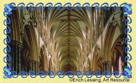
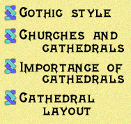

|
Welcome to the Pointed Arch. In this edition, we focus on the Gothic style of church architecture.
150 Years of Splendor
 Exhilarating, impressive, and emotionally charged, the Gothic style of architecture seized Europe's artistic imagination on its introduction in 1144 in France. Since then, Gothic churches have transformed Europe's architectural landscape. Many cities, especially in northern Europe, now boast a huge, glorious Gothic church. Notable among these are the Cathedral of Notre Dame in Paris and Salisbury Cathedral in England. The imposing Gothic style has proven especially popular among architects seeking to create a vision of ecclesiastic grandeur in a cathedral.Begin your exploration of Gothic architecture and cathedrals by clicking on one of the topics:

|